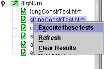

Test Tree Pop-Up Menu
The test tree provides a pop-up menu. Displaying the pop-up menu for a folder
or test is a platform-specific operation (such as right clicking the folder
or test icon in the test tree). You can also press Shift-F10
to display the pop-up menu for the test with focus.

The pop-up menu contains the following menu items:
The harness does not allow you to perform operations using the pop-up menu when
it is running tests. The harness displays an error dialog box if you
attempt to perform an operation using the pop-up menu when tests are running.
See Keyboard access for a description
of how you can use the keyboard to open and navigate the pop-up menu.
Quick Pick Test Execution
You can use the Execute these tests menu item to run the tests and folders highlighted in the test tree, subject to filters such as keywords.
The harness does not automatically perform a refresh operation before
running the tests. If changes are made to a test suite, you must perform a
refresh before running tests. See Refresh Test
Suite Contents for
a description of the refresh operation.
Quick Pick Test Execution of Specific Folders or Tests
-
Select one or more folders and tests in the test tree.
- You must left click
to select nodes. When more than one folder or test is highlighted in the
test tree, the Test Manager displays a list of the selected tests and folders
in the information area.
-
Selecting a test executes only that test.
- Selecting a folder executes all tests currently known to the Test Manager
in and below that folder.
- Right click in the test tree pane to open the pop-up menu.
Opening the pop-up menu is a platform-specific operation (such as right
clicking in the test tree pane). A modifier key or operation which
doesn't utilize the clicking at all may be necessary depending on your
platform details.
-
Choose Execute these tests from the test tree pop-up menu.
- If the Test Manager contains a completed configuration, the harness displays
a message to confirm the execute operation.
- If the Test Manager does not contain a completed configuration, the harness
displays a message asking you to complete the configuration or cancel the test run.

The harness combines the current configuration and the nodes selected in the test tree to determine which
tests will be executed. In the Test Manager Preferences,
the option "Execution from tree popup includes configuration Tests to Run" how the harness uses the
Tests to Run value in the configuration, as described below:
Box is unchecked (default). The harness ignores the tests specified in the current configuration's Tests to Run question. It runs the tests selected in the test tree, subject to configuration Test Selection filters, such as keywords. This option is compatible with the behavior of test harnesses older than version 4.2.1.
Box is checked. The harness compares the tests you selected in the test tree and the tests specified in the configuration's Tests to Run question to find a set of common tests. The harness then applies the configuration's Test Selection filters (such as keywords) to the common test set, producing the set of eligible tests.
-
Tests will be executed. The above test selection process and exclusions from the criteria
defined by the test suite or interview may eliminate all the
eligible tests. If this happens you will see a message, and the test run is aborted.
Refresh Test Suite Contents
When developing tests, changes in a test suite are not automatically detected
by the harness. The first time tests are run, the harness
uses the test finder to read test descriptions. If the harness loads tests
from an existing work directory, the test descriptions contained in those
results are used by default.
The refresh operation enables test developers to load changes they might have
made in a test suite without restarting the harness or reloading the
test suite.
The harness does not require a work directory to perform a refresh of
the test suite.
If you are viewing the test panel after refreshing a test or folder, update the
test tree by choosing a different test or folder icon and repeating your test
tree choice.
Refresh Tests and Folders
- Select one or more folders and tests in the test tree.
- You must left click
to select a node. When more than one folder or test is highlighted in
the test tree, the Test Manager displays a list of the selected tests and
folders in the information area.
- Selecting a test chooses only that test.
- Selecting a folder chooses all tests currently known to the Test Manager
in and below that folder.
- Right click in the test tree to open the pop-up menu.
Opening the pop-up menu is a platform-specific operation (such as right
clicking in the test tree).
- Choose Refresh from the pop-up menu.
- For files, the harness checks the time stamp of
the file containing the test description.
- If the time stamp has changed, the harness compares the test
descriptions.
- If the properties of the test descriptions are different,
the harness removes the test result from the work directory
and the Test Manager and loads a test containing the new test description
into the Test Manager and displays it in the Not Run state.
- For folders, the harness checks the time stamps of the files
in a folder and scans for new folders and tests. This operation may
take place on any folder including the root folder.
- If a time stamp has changed, the harness compares the
test descriptions.
- If the properties of the test descriptions are different,
the harness removes the test result from the work directory and
the Test Manager and loads the test containing the new test description
into the Test Manager and displays it in the Not Run state.
Clear Previous Test Results
You can use the Clear Results menu item to remove existing test results for any
combination of tests and folders.
To clear test results, you must have an open work directory.
Clear a Test Result
- Select one or more tests in the test tree.
You must left click
to select a node. When more than one test is highlighted in the test
tree, the Test Manager displays a list of the selected tests and folders
in the information area.
- Right click in the test tree to open the pop-up menu.
Opening the pop-up
menu is a platform-specific operation (such as right clicking in the
test tree).
-
Choose Clear Results from the test tree pop-up menu.
The harness opens a confirmation dialog box that displays a
list of the selected items and performs the following actions
when the user clicks the Yes button:
- Removes the
.jtr file from the work directory for that test.
- Refreshes the test description for that test.
- Displays the test in the Not Run state.
Clear Test Results in Folders
- Select one or more folders in the test tree.
You must left click
to select a node. When more than one folder is highlighted in the test
tree, the Test Manager displays a list of the selected tests and folders
in the information area.
- Right click in the test tree pane to open the pop-up menu.
Opening the pop-up
menu is a platform-specific operation (such as right clicking in the
test tree).
-
Choose Clear Results from the test tree pop-up menu.
The harness displays a confirmation dialog box that displays a list of
selected items and performs the following actions when the user clicks
the Yes button:
- Removes all
.jtr files from the work directory for all tests in and
below that folder.
- Deletes all other files in and below the folder in the work directory.
- Deletes all other directories corresponding to the folders in and below
the folder in the work directory.
- Displays the folder and its tests as Not Run.
The harness does not display an error message if it is unable to
delete a folder or file from the work directory.
Copyright © 2002, 2011, Oracle and/or its affiliates. All rights reserved.